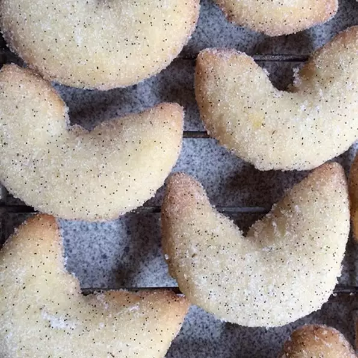

Vanillekipferl

Ingredients
- 2 ⅓ cups all-purpose flour
- 1 ½ cups almond flour
- ½ cup white sugar
- 2 tablespoons white sugar
- 2 ¼ sticks unsalted butter, softened
- 3 large egg yolks
Steps
- Stir all-purpose flour, almond flour, and 1/2 cup plus 2 tablespoons sugar together in a bowl. Add butter and egg yolks; knead by hand until a smooth dough forms.
- Divide dough into quarters and form each piece into a rectangle. Wrap each rectangle in plastic wrap. Chill dough in the refrigerator until firm, at least 1 hour, and up to overnight.
- Place 1/2 cup plus 1 tablespoon white sugar in a food processor. Cut each vanilla bean in half lengthwise and scrape seeds from each half with the back of the knife; add to the sugar. Pulse until seeds are evenly dispersed. Pour vanilla sugar into a shallow bowl.
- Preheat the oven to 350 degrees F (175 degrees C). Line 2 large baking sheets with parchment paper.
- Cut 1 portion of dough into 6 equal pieces, keeping remaining dough chilled. Roll each piece evenly into a 1/2-inch-thick log on a lightly floured surface. Cut each log crosswise into 2-inch pieces and gently roll or pinch ends of each piece into points. Arrange cookies on the baking sheets.
- Bake in the preheated oven until bottoms are lightly golden but tops are still pale, 10 to 12 minutes. Remove from the oven and let stand for 2 minutes.
- Roll warm cookies in the vanilla sugar, brushing off excess sugar. Transfer cookies to a wire rack to cool completely. Repeat with remaining dough, baking in batches.